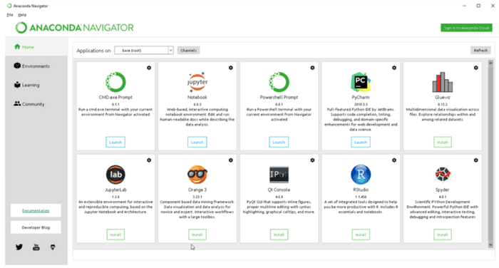

What is Google Earth Engine (GEE)?
Google Earth Engine (GEE) is a geospatial processing service. It hosts several petabytes of satellite imagery and geospatial datasets on the cloud, which alows the user to perform geospatial processing at scale. GEE consists of several datasets (satellite, geophysical, climate, etc.) over the last 40 years and has a computational engine that can rapidly perform geospatial analysis. We can develop applications directly on the dashboard or through APIs (Python, Javascript).
Getting an account
You can sign up for Google Earth Engine account here: https://signup.earthengine.google.com/#!/
It will approximately take around 24 hours to get an account approved. Once it is approved, you should be abled to access here: https://code.earthengine.google.com/
List of Remote Sensing Indices
Normalized Difference Vegetation Index (NDVI)
Normalized Difference Water Index (NDWI)
Enhanced Vegetation Index (EVI): an alternative to NDVI
An exhaustive list of remote sensing indices
Datasets
Some commonly used GEE datasets
Landsat
Sentinel
Modis
Landcover
Simple exercises
NASA has detailed tutorial videos on Google Earth Engine basics and general applications: Link to NASA tutorial.
Defining geometries:
GEE data types: image, image collections, feature, feature collections
Loading data
Visualizing images and bands
Band computations
Plotting charts
Exporting images and plots
GEEMAP Python Package
GEE operations can be easily performed using geemap package in python Jupyter notebook. geemap is a powerful package to perform GEE operations using Python, and it allows the user to create quick dashboards and timelapses.
To use geemap one needs to have python and Jupyter notebook. Easiest way to install both is through Anaconda. Link to download.
We can access python either through Anaconda Navigator or through the terminal by using conda command.

If using Anaconda Navigator, we need to install geemap package first. We can go to the 'Environments' option from the menu in the left hand side bar menu and search for geemap package and install as explained in this tutorial: Installing python packages in Anaconda.
After installing the geemap package, we can navigate back to Anaconda Navigator's home page, and click on Jupyter notebook. If any additional packages need to be installed, follow the same approach mentioned above.
The created of geemap package, Dr. Qiusheng Wu has uploaded a detailed set of tutorials. Link to getting started on geemap.